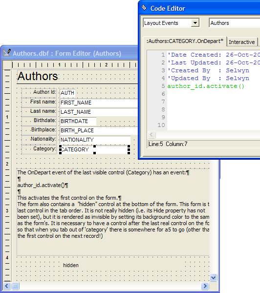

Circular Tabbing on a Form
In many circumstances you will want to have the cursor return to the first tab stop on a form when the user presses TAB on the last tab stop on a form.
Create an extra hidden control that is redefined as the last tab stop on the form. Do not set the hide property of the control. Change its color so that it blends into the form background.
Add the following Xbasic script to the OnDepart event of the last visible tab stop on the form. Assume that the name of the object (not the field) that is the first tab stop is "author_id".
|
author_id.activate() |

Supported By
Alpha Five Version 5 and Above